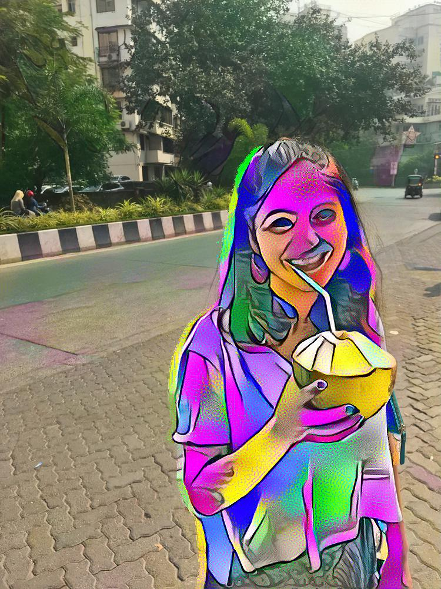

Mozart
Inspired by the work of GANGough, I am currently working on a project I dubbed Mozart to see if art can be created by a machine. Starting with basic techniques such as neural style transfers, my aim in this project utilize Generated Adversarial Networks (GAN’s) to create art in the style of another artists.
In order to do this, I will stylize a set of images in the style of an artists (for now I am currently trying to do this with the MNIST database). I will utilize the neural style technique in order to do this. After this, I will feed the stylized imaged to an Auxillary-Classifer GAN (in the case of the MNIST data the classes will be 0-9). Then I will ask the GAN to produce what it thinks a requested number will look like.
Currently I am working on stylizing the 60,000+ images from the MNIST database, utilizing a Nvidia GTX 1060 with 6GB of RAM.
While we wait let’s look at what neural style transfers can do!
The above image was created by cropping out the women, running a neural style transfer on her, and then blending the orginial and cropped image.